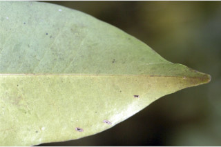
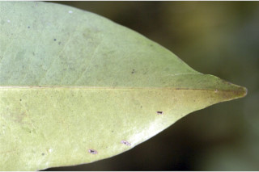
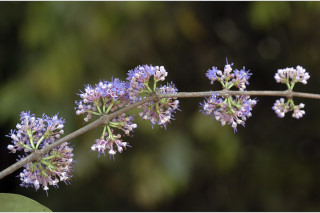
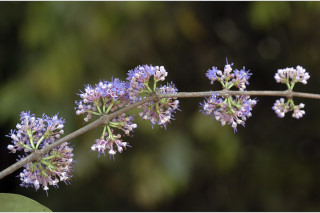

Tamil: Alli, Anjani, Kasai, Kava, Kaya, Kurre-kaya, Pande-kaya, Pungali, Sirugasa
Malayalam: Anakkayavu, Kalyam, Kanila, Kanalei, Kannavu, Kashavu, Netunjetti
Kannada: Alle, Archana, Arachare, Arachate, Archeti, Harchari, Huli soppu, Limbattoli, Lakhonde, Udaballi, Uddale
Vernacular names
Images


 

 
